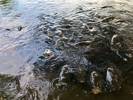
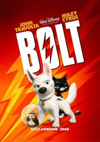

Here are some images from when I traveled the world. These were my top
three favorite places. The food was amazing!

I definitely consider myself a cat person. I love dogs too, but I get along better with cats. Here are 2 images of my favorite animals.
The fox and the ermine (left and right image, respectively) grow very fluffy coats during the winter!
Here is a picture of my favorite movie. If you click on it, it will take you to my About Me page. Why? Well... because why not? ;)
Down below is a small table of what I do Monday through Wednesday between the hours of 12pm and 5pm
| Monday | Tuesday | Wednesday | |
|---|---|---|---|
| 12pm | Web Dev. | Lunch | Econ. Seminar |
| 1pm | Web Dev. | Lunch | |
| 2pm | Spanish | Spanish | |
| 3pm | Gym | ||
| 4pm | Gym | Gym | |
| 5pm | Commute | CSS Club | Commute |